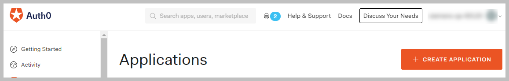
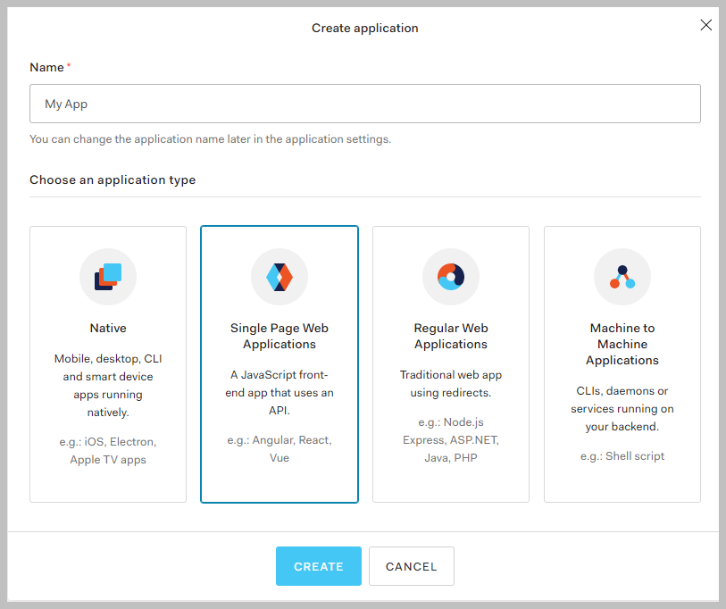
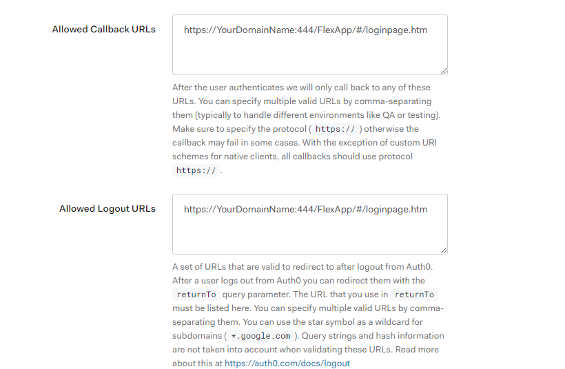
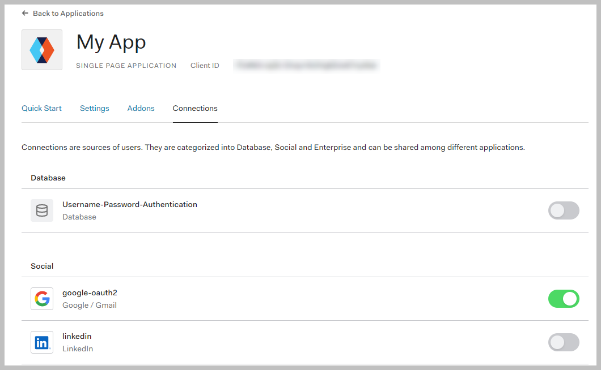

Example: Auth0 Identity Provider Configuration
This section provides an example of the configuration process for using an OpenID user account from an Identity Provider (for example, Siemens ID, Google, and so on) via the Auth0 Identity Access Management platform (IAM).

The configuration instructions for the Auth0 platform are provided for your convenience, but they are beyond our control and may change before we can update this section.
Note that other IAM platforms can be used (see Identity Providers). For specific instructions, see the IAM platform web site and documentation.
Auth0 Configuration Settings
To configure the Desigo CC authorization application on Auth0, proceed as follows:
- If you do not already have an account, register and create an account on Auth0.
Follow the instructions found here: https://auth0.com/. - Create an Auth0 Application.
- Select Create Application.

- Enter the Name of the Application, for example
Management Station Authorization Service. - Choose the application type: select Single Page Web Application.
- Select Create.

- In the navigation pane, expand Applications and select Applications.
- In the Applications page, select the newly created application.
- The application page displays, with the Settings tab selected.
- (Optional) In Basic Information, configure the Description.
- Further down in the page, in Application URLs, configure the following:
- Allowed Callback URLs: This field is used by Auth0 to redirect the user to a page after successful authentication by the Identity Provider.
It is mandatory to register the application’s URL under Allowed Callback URLs for a successful identity provider authentication, as Auth0 uses this for whitelisting the incoming authentication requests. Any changes in the host application URL (e.g., domain, port, application name etc.) must align with this as well.
Enter the Flex Client login page URL here, for example:
https://{domain name}:444/FlexApp/#/loginpage.htm - Allowed Logout URLs: This field is used by Auth0 to redirect user to a page after successful logout from identity provider.
It is mandatory to register the application’s URL under Allowed Logout URLs for a successful identity provider authentication, as Auth0 uses this for whitelisting the incoming authentication requests. Any changes in the host application URL (e.g., domain, port, application name etc.) must align with this as well.
Enter the Flex Client login page URL here, for example:
https://{domain name}:444/FlexApp/#/loginpage.htm
- Select the Connections tab and enable the connections you want to use:
- Social connections. For example, Gmail, LinkedIn, and so on. Follow instructions in Auth0.
- Organization specific connection. Create a social connection and follow up with the team in the organization that handles IAM. For example, Siemens ID.
NOTE: Contact the Siemens Service Desk for support with the identity provider integration with a Siemens ID.
For all other identity provider integration methods use your Access Management platform documentation to guide you; for example, Auth0, Okta, and so on.